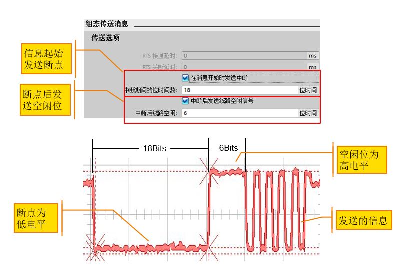
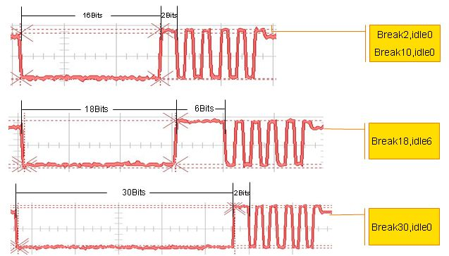
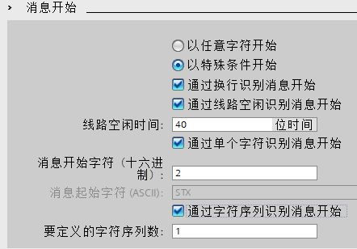
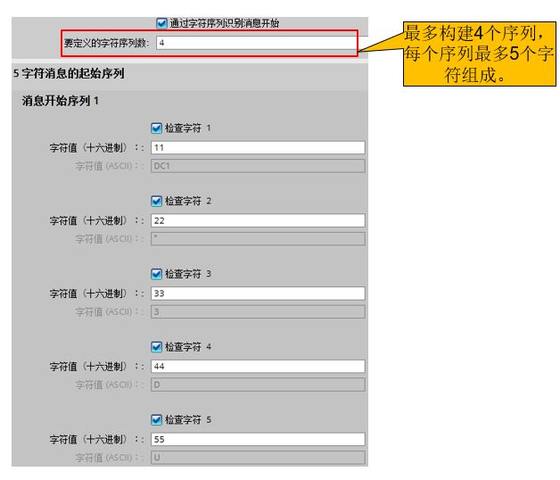
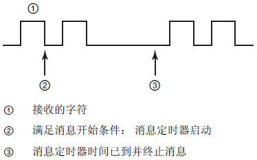
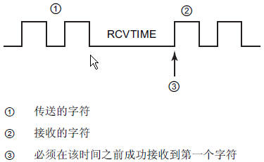
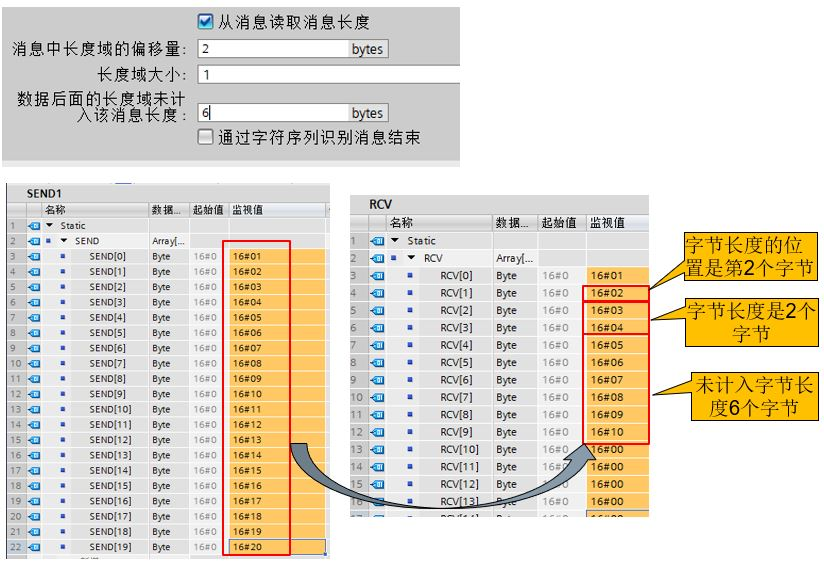
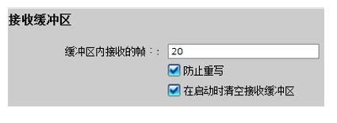

S7-1200支持的串行通讯方式
| 名称 | CM 1241 RS232 | CM 1241 RS422/485 | CB 1241 RS485 |
|---|---|---|---|
| 订货号 | 6ES7241-1AH32-0XB0 |
6ES7241-1CH32-0XB0 |
6ES7241-1CH30-1XB0 |
| 通讯口类型 | RS232 |
RS422/RS485 |
RS485 |
| 波特率(bps) | 300 ;600 ;1.2 k; 2.4 k; 4.8 k; 9.6 k;19.2 k; 38.4 k;
57.6 k; 76.8 k; 115.2 k | ||
| 校验方式 |
| ||
| 流控 | 硬件流控；软件流控 |
RS422 支持软件流控 |
不支持 |
| 接收缓冲区 | 1kB | ||
| 通讯距离(屏蔽电缆) | 10m |
1000m |
1000m |
| 电源消耗(5V DC) | 200mA |
220mA |
50mA |
| 电源消耗(24V DC) | - |
- |
80mA |
图1. CM1241串口通信模块

图2. CB1241串口通信模块
诊断 LED 灯
发送 LED 灯
接收 LED 灯
 注意：通信板 CB1241 只有发送和接收 LED 灯，而没有诊断 LED 灯
注意：通信板 CB1241 只有发送和接收 LED 灯，而没有诊断 LED 灯
串口的校验： 奇偶校验：用于检验数据传递的正确性，是最简单的检错方法。

图3. 校验设置
 注意：奇偶校验可以简单的判断数据的正确性，从原理上可看出当一位出错，可以准确判断，当两位或更多位误码就校验不出，但由于其实现简单，仍得到了广泛使用。
注意：奇偶校验可以简单的判断数据的正确性，从原理上可看出当一位出错，可以准确判断，当两位或更多位误码就校验不出，但由于其实现简单，仍得到了广泛使用。
定义在信息起始发送断点及空闲线
字符中断：当接收到的数据保持为零值的时间大于完整的字符传输时间时，代表字符中断。一个完整字符传输时间定义为传输起始位、数据位、校验位和停止位的时间总和。

图4. 定义在信息起始发送断点及空闲线
 常问问题：为什么发送配置中只配了2位字符中断，而通信伙伴却可以正常接收数据？
常问问题：为什么发送配置中只配了2位字符中断，而通信伙伴却可以正常接收数据？
答：发送配置中设置的字符中断小于等于16位时，系统自动发出16位的字符中断位；设置大于16位时，则发出的中断位与实际设置相符。下图是设置的发送断点及空闲线位及其实际发出的波形图。
波形图 |
断点及空闲线设置 |

图5. 断点及空闲线波形图
以任意字符开始
以特殊条件开始：

图6. 通信接收起始条件
通过字符序列识别消息开始
对于多个起始序列的组态，只要出现其中一个序列，即会满足开始条件。下图右侧即为满足起始条件的字符串。

图7. 通过字符序列识别消息开始
如果选择了多个起始条件，则检查开始条件的顺序如下:

 注意:
注意:
检查多个开始条件时，如果有一个条件没有满足，则 CM 将从第一个所需的条件开始重新启动检查。
如果同时组态了字符和字符序列作为开始条件，则字符序列的判断条件无效。

图8.结束条件设置
 注意:与多个起始条件的判断不同，检查多个结束条件时，任何一个条件满足，信息接收结束。
注意:与多个起始条件的判断不同，检查多个结束条件时，任何一个条件满足，信息接收结束。
消息超时结束条件
消息超时时间从接到符合消息开始条件的第一个字符时开始计算，如下图。

图9.消息超时
响应超时结束条件
响应超时时间从传送结束时开始计算，只要传送成功完成且模块开始接收操作，定时器就会启动。

图10.响应超时
 注意:响应超时结束条件不能作为单独的结束条件的设置，否则会在编译时报如下错误:
注意:响应超时结束条件不能作为单独的结束条件的设置，否则会在编译时报如下错误:

图11.响应超时作为单独的结束条件报错
从消息中读取信息长度

图12.从消息中读取信息长度的设置
实际收到的数据长度= 长度偏移前的字节数+长度字节大小+读取的实际数据长度+不计入字节长度的字节数 10=（2-1）+1+2+6

图13.接收缓冲区设置
 注意:缓存区可以存储多条信息，限制是20条信息或最多1024字节。
注意:缓存区可以存储多条信息，限制是20条信息或最多1024字节。
缓存区的数据保持
断电后缓存区中的数据全部丢失,不能保持。
勾选“在启动时清空接收缓冲区”，CPU停止再启动时，缓冲区数据清空。
通信模板缓存区超出20条信息
启用了“防止重写”，如果缓存区中的信息超过20条，后面的信息被 自动丢弃，报错16#81E6。
不启用“防止重写”，如果缓存区中的信息超过20条，后面的信息会将之前的信息覆盖，且不报错。
通信模板缓存区多包数据超出1024字节
发送多个每包50个字节数据，当数据超过1024字节那包就被丢弃了，前面的可以正常接收，且没有任何报错.在前面数据被成功接收以后，只要缓存区有空间，后面的数据还可以正常收到。
通信模板缓存区一包数据超出1024字节
如果发送数据一包就大于1024字节时，缓冲区接收到数据到1024字节时，虽然没有收到结束字符，数据由缓存区送给CPU，但会报错16#80E0,如下图。

图14. 发送数据一包大于1024字节时,缓存区报错
当缓冲区溢出报错时，需要使用Reset指令进行清除缓冲区的操作。

图15. 使用Reset指令复位缓存区错误，恢复数据接收
答：因为 S7-1200 RS485 模块接口不提供24V电源，不能给 PC/PPI 电缆供电，所以电缆无法工作。
解决办法：可以将 S7-1200 RS485 与 S7-200 通信口网络连接，将 PC/PPI 电缆插在 S7-200 通信口上总线连接器的编程口上，对S7-1200 RS485进行串口调试。此时S7-200必须上电并打到停止状态。